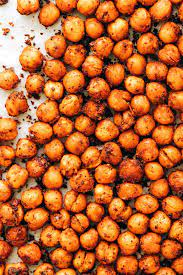

Roasted Chickpeas

Roasted Chickpeas
This is a great healthy and easy to make recipe that tastes great and has very few ingredients.
Ingredients
- 2 can chickpeas (Garbanzo Beans)
- 2 tablespoones olive oil
- 1/2 tsp salt
- Seasoning of choice (Paprika, ghost chili flakes, garam masala, etc.
- Preheat oven to 400 degree farenheit
- Mix lentils, olive oil, and salt together
- Evenly spread lentils on baking sheet with parchement paper
- Bake for 40 minutes
- Season and enjoy!